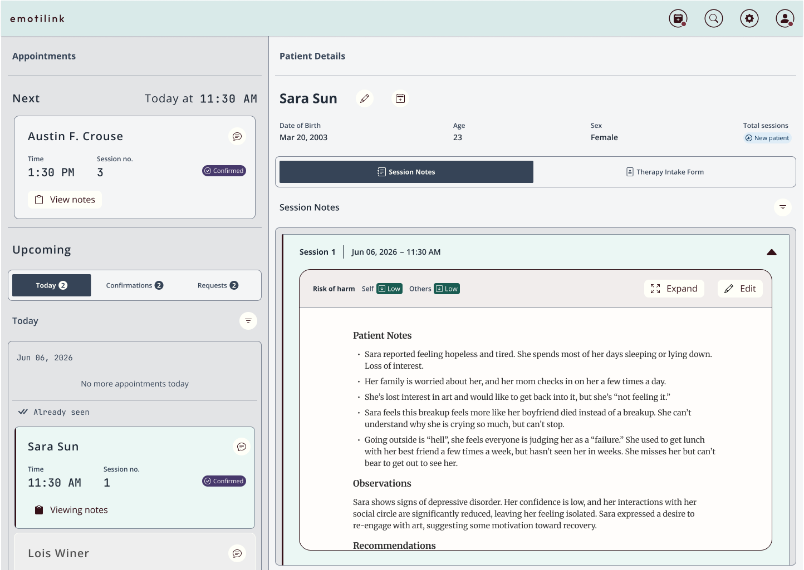
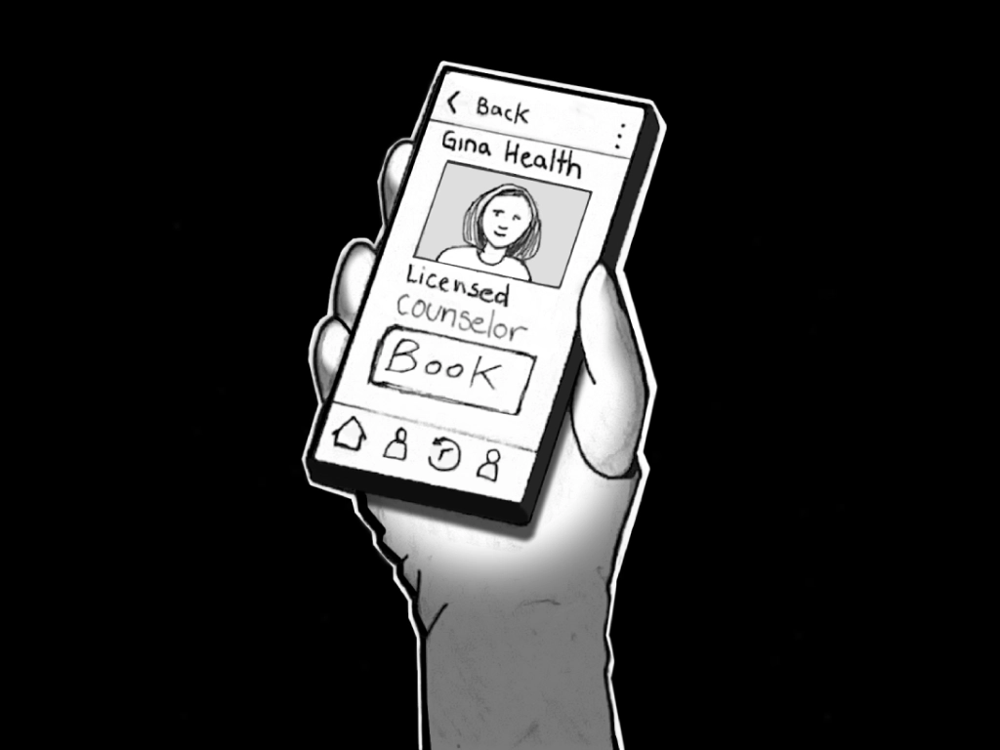
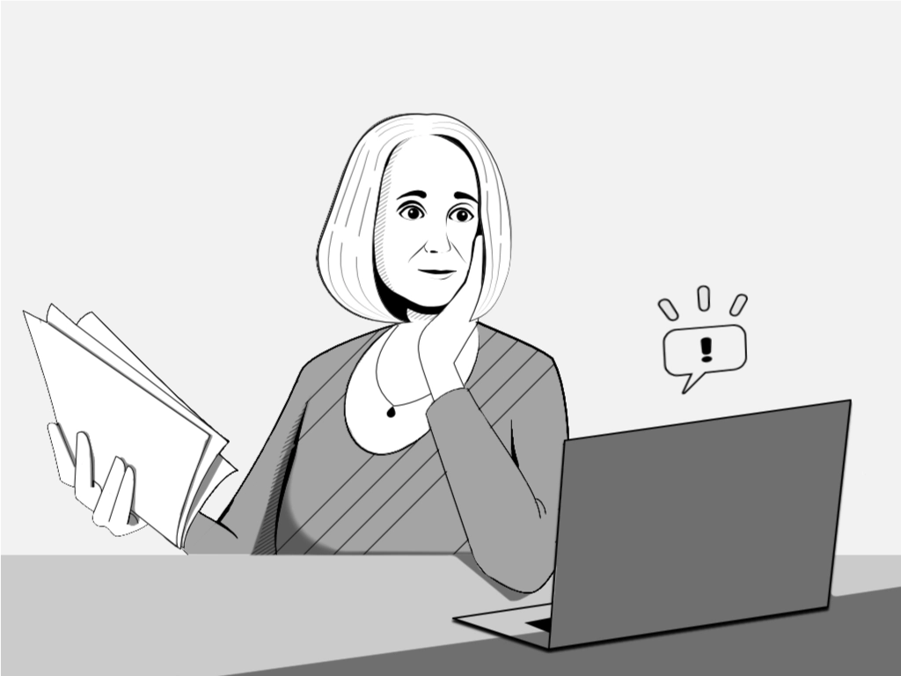
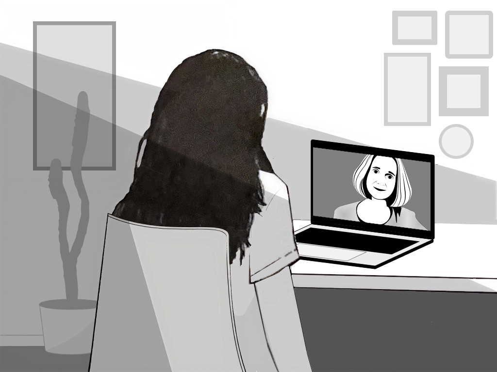
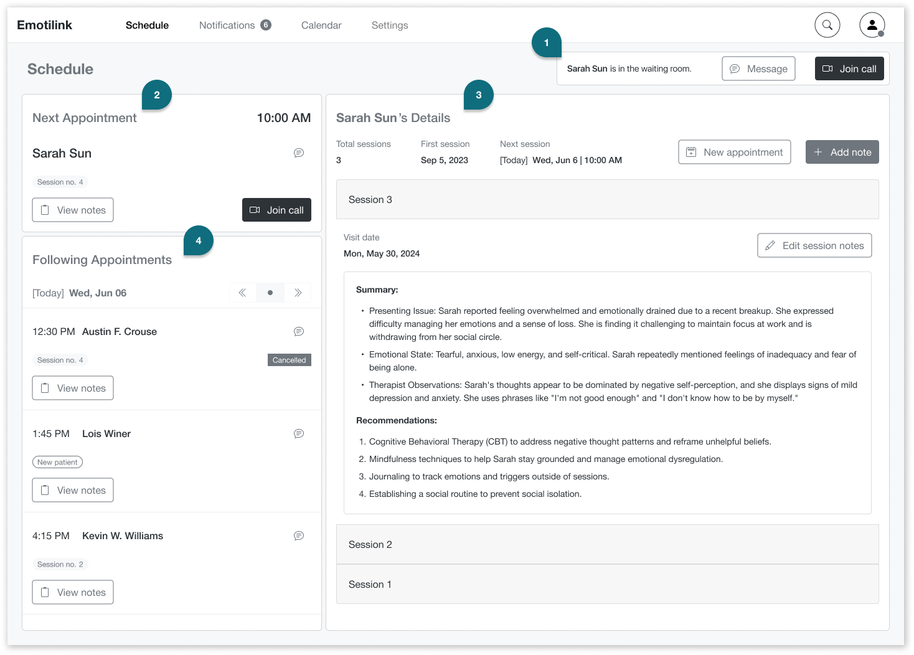
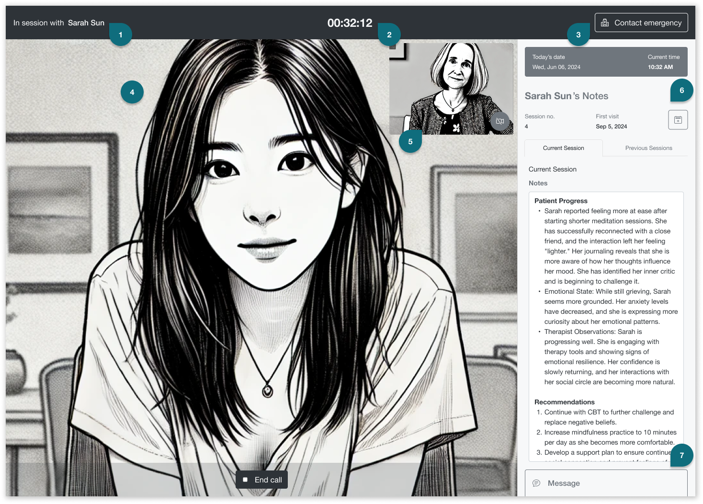
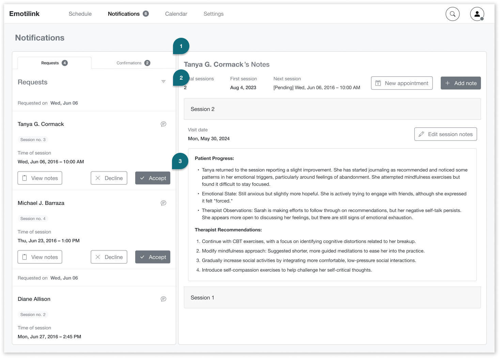
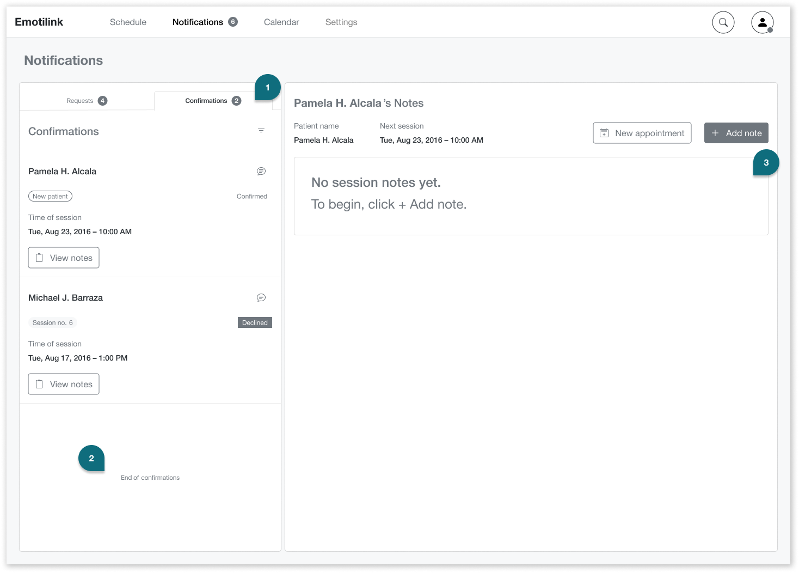

Client
Emotilink (MATTER Healthcare Incubator)
Designing a HIPAA-compliant telehealth platform that makes mental health support feel safe, accessible, and human — for both patients and therapists.

Finding mental health support is tough. Emotilink — a healthcare startup in Chicago's MATTER incubator — set out to change that with a HIPAA-compliant telehealth platform connecting patients with licensed mental health professionals in real time, on mobile and desktop.
The Emotilink team engaged our three-person UX consultancy at DESIGNATION to provide expert guidance throughout the product’s design process. Our role included conducting in-depth user research to identify patient and therapist needs, uncovering usability concerns, and proposing actionable design opportunities. We were responsible for delivering initial design prototypes for the patient-facing mobile app and the therapist-facing desktop application. This project demanded sensitivity—not only functional excellence, but also a deep understanding of vulnerable users and the challenges therapists face in establishing trust and reading emotional cues in digital interactions. A poor design could prevent users from opening up, while a thoughtful approach might encourage crucial engagement.
I worked as one of three UX designers on the engagement, sharing responsibility for user research, planning, and moderating interviews, conducting surveys, and synthesizing findings as a team. I took sole ownership of the competitive analysis, studying five direct competitors to identify market gaps and design patterns Emotilink could learn from or differentiate against.
The dimension of this project that required the most from me as a designer wasn't technical — it was empathetic. Researching a mental health product means sitting with participants who may be processing real distress. It meant asking sensitive questions carefully, creating conditions where people felt safe enough to be honest, and translating what they shared into design decisions that honored their vulnerability rather than exploited it.
Years later, I returned to this project on my own. When I saw the high-fidelity interface another team had built for Emotilink, I noticed that the color choices — while close to the original brand direction — failed WCAG contrast requirements. I rebuilt the patient-facing UI on my own time, with no client brief and no deadline, using accessible color alternatives that preserved the brand feel while meeting WCAG standards. That work is included at the end of this case study.
A lot of individuals go through emotional distress and need support but often struggle to access mental health services due to various barriers. These barriers can include not knowing about available resources, having trouble finding an in-person therapist, and feeling uncomfortable when choosing a therapist.
The Emotilink team also thought some people might be skeptical about developing a long-term therapeutic relationship through a mobile app.
“I think some people have problems going to a therapist because they don’t want to be that guy who goes to the therapist.”
– Emotilink Stakeholder
Emotilink aims to improve access to mental health support to empower individuals to prioritize their emotional well-being.
Over a two-week period, we conducted thorough user research. We tested our assumptions, and our insights helped stakeholders address their main questions about our needs and concerns while identifying design opportunities.
Are people open to virtual therapy?
Yes, they are. Out of 38 respondents, 37 have used or considered using mental health services. From this group, ten were interested in using an app to connect with a mental health counselor, versus three who said no and the majority (20) who “would need to see the application in action to decide,” placing the burden for adoption on the user experience.
Who will use the app?
People who need immediate improvement in their emotional well-being. These individuals have faced challenges and struggled to find someone to talk to due to scheduling conflicts or a lack of available providers. They need someone to help them navigate short-term issues when they arise.
What offerings are critical for a virtual therapy application to work?
Flexibility
They want to be able to find someone when they need it.
Reliability
They seek a tool to help them connect with a trustworthy, accessible, and relatable professional who shares a common identity and life experiences.
User reviews
User reviews are significant when selecting a therapist for 66.7% of survey participants. 51.5% place more importance on user reviews than therapist recommendations.
Privacy and confidentiality
The application must ensure session privacy and emphasize transparency, including how it moderates therapists' reviews.
Payment
Knowing insurance options is complex and needs to be more transparent. 48.5% are unaware of their insurance plan’s mental health services reimbursement rates, and 39.4% believe they know them. Participants are willing to pay $10 to $120 out-of-pocket for a one-hour session if their insurance doesn’t cover it.
Initial screening
Therapists want to determine if they are an appropriate fit for the patient. If not, they explain the situation to their patients and recommend another professional who could be a better fit.
Transparency
Opening up to someone is a slow process. Therapists must communicate clearly and set expectations to establish trust and rapport quickly. They help users get in the right mindset. They expect the platform to be transparent with users’ expectations and aid with building long-term relationships.
Trust
It’s challenging to determine a patient’s mindset and safety without reading body language and managing failed connections and dropped calls so patients do not feel ignored.
Payment
It can be awkward to bring up payment during sessions, but billing medical insurance for virtual services and ensuring competitive rates are important aspects to consider.
We meticulously studied five of Emotilink’s competitors (Amwell, Breakthrough, Doctor on Demand, Talkspace, and Teladoc) at the time (2016) and analyzed their features and offerings. This comprehensive analysis involved examining user interfaces, reading user reviews, and understanding their business models. It gave us a clear understanding of the market landscape and helped us identify areas where Emotilink could differentiate itself.
Provided video sessions
Provided phone sessions
Provided Instant Messaging
Provided on-demand services
Took health insurance.
To communicate the intended patient experience to the Emotilink team and align the broader team on the emotional arc of the product, I illustrated a six-panel storyboard following Sara Sun — a patient navigating emotional distress — from her first moment of need through her first therapy session.
Panel 1: "Isolation" – Digital drawing by Daniel Mejia. Made with Figma and Affinity.
Sara sits alone in a dark room, looking out at the rain — isolated after a recent breakup, in need of support but not yet reaching for it.

Panel 2: "Discovery" – Digital drawing by Daniel Mejia. Made with Figma and Affinity.
She picks up her phone, searches for online therapy, and finds Emotilink. She browses therapist profiles until she finds Gina Health, a Licensed Counselor who feels like the right fit.

Panel 3: "Request and review" – Digital drawing by Daniel Mejia. Made with Figma and Affinity.
Gina receives Sara's session request on her laptop, reviews Sara's Counseling Intake Form, and approves the appointment.
Panel 4: "Confirmation" – Digital drawing by Daniel Mejia. Made with Figma and Affinity.
Sara — in bed, in a dark room — receives the confirmation notification. The screen illuminates her face as she confirms with a single tap.
Panel 5: "Preparation" – Digital drawing by Daniel Mejia. Made with Figma and Affinity.
Before the session, Gina reviews Sara's patient notes — preparing to meet her where she is, not starting from scratch.

Panel 6: "Connection" – Digital drawing by Daniel Mejia. Made with Figma and Affinity.
Sara joins her session from her desk. Gina appears on the screen. The journey from isolation to support is complete.
After gathering and analyzing our research findings, we embarked on the design process with a user-centric approach. We brainstormed solutions to each problem expressed by our users and did rough wireframing on features that address critical user needs. We then conducted two rounds of user testing and iteratively refined our design based on users’ feedback. We focused on the user's experience, ensuring the application's usability and effectiveness.
Our Solution is an application for desktop and mobile devices that connects patients with available therapists who work flexible schedules to help them with ongoing or immediate issues.
“I would never schedule back-to-back sessions. My hand would get too tired. I wouldn’t do it for one session; I would have it sit on my laptop.”
– Interviewed Therapist
We designed a desktop application for Therapists, giving them enough space to manage their patients' information comfortably and efficiently. We ensured that patients’ personal and sensitive information was protected and gave users complete control over what they shared upfront to foster a sense of trust and confidence in the platform.
We recommended that therapists avoid dealing with insurance information and have personalized customer experience professionals handle the payment hassle. This would allow therapists to focus on their patients' emotional well-being.

Schedule screen
Waiting Room alert
A Waiting Room notification alerts the therapist when a patient has joined the call and is ready for their session. The therapist can then enter the call or message the patient if something unexpected happens.
Next Appointment
The Next Appointment section displays the next patient’s essential information and actions to help the therapist prepare and keep the patient in mind.
Patient’s Details
In the Patient’s Details section, the therapist can view notes from previous sessions, add new ones, and schedule more appointments.
Following Appointment
The Following Appointment section provides a quick overview of the upcoming sessions for the day, including essential information like the number of previous sessions and the scheduled time. It also includes a date selector for therapists to view their list of sessions for future days.

In session screen. Patient and therapist images are AI generated.
In session with patient
Title to help keep therapist focused on her patient, her name, and identity.
The current session timer
Indicates top-center the time the patient is in session with a therapist so they can manage their time effectively.
Contact emergency [button]
In cases when the therapist determines that the user is a danger to themselves or others and needs to connect with the user's local mental health clinic or 911.
Patient’s video
It will take up the screen’s view so that the therapist can read body language and connect with their patients. The End call [button] is necessary in case of technical problems or to protect the therapist if the patient displays inappropriate behavior or other concerns.
Therapist's self-view video
Allows the therapists to view themselves from the user's perspective.
Patient’s Notes
This session shows essential information such as the patient’s name, session history with the therapist, and today’s date and time. It includes adding notes for the current session and seeing notes from previous sessions.
Message
The instant messaging functionality will help therapists share online resources or overcome verbal barriers with written language.

In the Notifications / Requests the therapist can manage appointment requests.
Requests
A quick overview of session requests. Therapists can view general details, including the patient’s name, the requested session count, and the time of the session.
Filter
To view requests by the date requested, patient’s name, time of the session, etc.
Message, Decline, or Accept [buttons]
Therapists can message the patient to reschedule if needed. They can also view the patient’s records before accepting or declining. Option for therapists to choose who he will attend or who he will need to refer to another therapist if required.

In the Notifications / Confirmations tab the therapist can manage confirmations.
Confirmations
In the Confirmations tab, therapists can see who has confirmed or declined their appointments.
End of list message
This will let the therapist know when he’s caught up with all notifications and scheduled appointments.
Empty states
Empty states are informative, with clear instructions on how to begin to help therapists prepare their initial screening process ahead of the session.
The Emotilink team accepted our design recommendations, confirming that the solutions we provided were grounded in what users told us directly — not assumptions. We recommended further usability testing before development to surface edge cases, and advised the team to work with engineers early to review feasibility and prioritize features within budget.
Two rounds of user testing during the design process shaped key decisions — particularly around therapist workflow, notification management, and the design of empty states that guided new users without overwhelming them.
The accessible high-fidelity UI I built independently after the engagement is included below — a continuation of the work that reflects how I believe this product should have been delivered from the start.
Years after the original engagement, I came back to this project. Emotilink had moved forward with another team to build the high-fidelity patient interface — and when I looked at what they shipped, I noticed that several color choices, while close to the brand direction, failed WCAG contrast requirements. The interface wasn't accessible to users with low vision or color perception differences.
I hadn't been asked to fix it. There was no client relationship to maintain, no deadline to meet. But I couldn't leave it as-is — not for a product built specifically to lower barriers to mental health support. So I rebuilt the teraphist-facing UI on my own, using the same brand palette but replacing the inaccessible combinations with WCAG-compliant alternatives. The result is a high-fidelity prototype that holds the visual identity together while ensuring the experience works for everyone it was designed to serve.
These are WCAG AA-compliant alternatives that preserve Emotilink's calm, trust-building brand feel while meeting contrast standards on both light and dark backgrounds
Overall score
Ratio improvement by use case
The original interface used brand teal values that fell below WCAG AA contrast thresholds on white backgrounds. The accessible version replaces those values with darker, higher-contrast alternatives that maintain the brand's calm, trust-building feel while meeting the 4.5:1 minimum ratio for normal text and 3:1 for large text.
Everyone benefits from talking with a therapist, including the therapist. Technology has been pivotal in improving humanity’s livelihood and longevity, but strides are still being made to help people’s emotional well-being. It was great to be part of this landmark effort and to use my design skills to play a small part in making mental and emotional health accessible to more people using current technology.